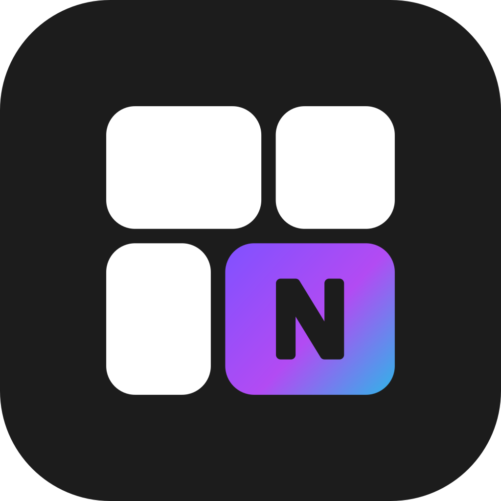

Escriba la contraseña que le dio el equipo de Nanefy.Enter the password the Nanefy team gave you.
El mismo instalador para todas las tiendas: el código va en el nombre del archivo. Nanefy guarda solo su huella (SHA-256); uno usado o vencido no instala nada.The same installer for every store: the code is in the file's name. Nanefy keeps only its fingerprint (SHA-256); a used or expired one installs nothing.
>
Se ejecuta como administrador en la computadora con el SQL Server de LOC SMS. Instala Nanefy en C:\Nanefy y lo que Windows necesite (Visual C++, el driver ODBC de Microsoft).Run as administrator on the computer with LOC SMS's SQL Server. It installs Nanefy in C:\Nanefy and what Windows needs (Visual C++, Microsoft's ODBC driver).
Guardada cifrada, con la clave propia de esa instalación.Kept encrypted, with that installation's own key.
Nunca se muestra en pantalla. Desde el admin se puede desconectar en cualquier momento.Never shown on screen. It can be disconnected from the admin at any time.
Nanefy se actualiza sola de noche: descarga la versión nueva, verifica su huella antes de ejecutarla, y los datos de la tienda se conservan.Nanefy updates itself at night: it downloads the new version, checks its fingerprint before running it, and the store's data stays.
Lee la base de datos de LOC SMS, nada más. No puede cambiar un precio ni borrar un artículo.It reads LOC SMS's database, nothing more. It cannot change a price or delete an item.
store.nanefy.com
Un servicio de Windows que arranca con la computadora, sin nadie conectado, y lee LOC SMS cada 5 minutos.A Windows service that starts with the computer, with nobody signed in, and reads LOC SMS every 5 minutes.
El firewall de Windows abre el puerto de Nanefy solo a la red local. Si el servidor es Windows Server, su DNS da el nombre store.nanefy.com dentro de la tienda.Windows' firewall opens Nanefy's port to the local network only. On a Windows Server, its DNS answers store.nanefy.com inside the store.
Con la llave de esa tienda, y solo lo de esa tienda: nunca la de otra, ni las cuentas del personal de Nanefy.With that store's key, and only that store's: never another's, nor the Nanefy staff's accounts.
# Nanefy at the store # 1. encuentra la base de datos de LOC SMSfinds LOC SMS's database# 2. le da a Nanefy permiso de solo lecturagives Nanefy read-only access# 3. cambia el código por la llave (nunca se muestra)trades the code for the key (never shown)# 4. baja usuarios, módulos y diseños de la tiendatakes down the store's accounts, modules and designs# 5. lee los productos, a la vistareads the products, on screen# 6. servicio de Windows y firewall de la red localWindows service and the local network's firewall
Sin internet, la tienda sigue trabajando con lo último que bajó. Cada instalación, reconexión y actualización queda en el registro de actividad de Nanefy, con el nombre de la computadora.Without internet, the store keeps working with what it last took down. Every install, reconnection and update is in Nanefy's activity log, with the computer's name.